Choco XXL com Lula em Chamas
O palhaço Lula em Chamas 2.5, da série PREDADOR, na pesca ao choco.
Ver no YouTube (abre numa nova janela)Marca portuguesa
Descubra os palhaços ProChoco para a pesca de chocos, lulas e polvos. Desenvolvidos em Portugal, com atenção a cada detalhe, disponíveis numa variedade de cores e padrões para diferentes condições de pesca.
Ver vídeos de pescaConcebido para pescadores exigentes
Equilíbrio, movimento e padrões de cor
Tabelas competitivas para retalhistas
NO MAR
Da série PREDADOR ao CIRCUS, acompanha os nossos palhaços na pesca ao choco.
O palhaço Lula em Chamas 2.5, da série PREDADOR, na pesca ao choco.
Ver no YouTube (abre numa nova janela)Acompanha o CIRCUS da PROCHOCO debaixo de água, na pesca ao choco em Setúbal.
Ver no YouTube (abre numa nova janela)O EQUIPAMENTO
Explora a série PREDADOR e os modelos CIRCUS e PINTAS. Compara tamanhos, acabamentos e condições de utilização.
10 de 10 produtos
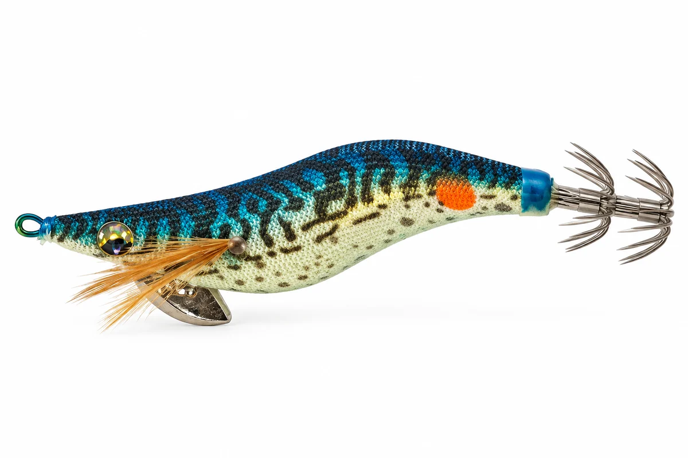
PREDADOR 01 · 2.5
Acabamento: GOLDEN TAPE
Quando usar o "cavala japonesa"?
Durante o dia, sobretudo com sol alto e água clara: o corpo dourado reflete a luz, imitando um cardume de sardinha ou cavala junto à superfície.
É um padrão muito eficaz em águas límpidas, onde o dourado sólido se destaca por contraste com o brilho intenso do sol.
A pinta junto às agulhas, semelhante a um olho, funciona como um ponto de atração visual. Ao explorar o comportamento natural do choco, que tende a atacar a presa pela zona da cabeça, ajuda a direcionar o ataque para a área das agulhas.
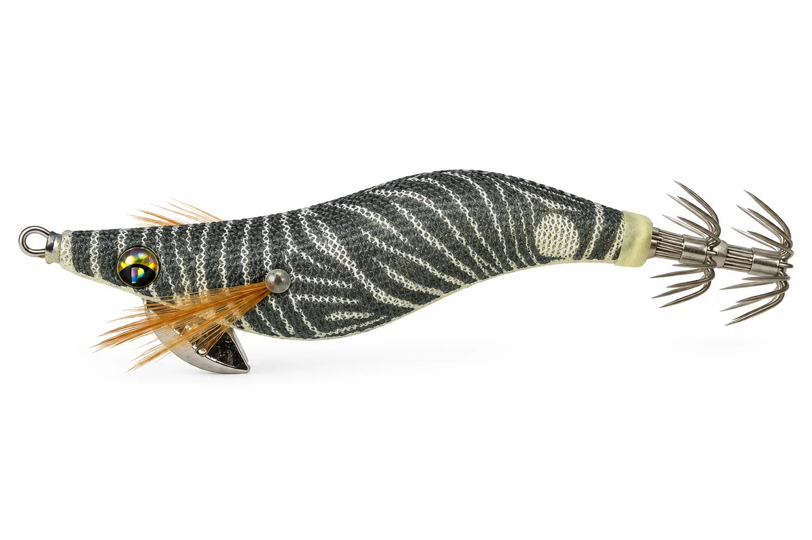
PREDADOR 02 · 2.5
Acabamento: GLOW
Quando usar a "zebra"?
O corpo glow acumula luz e brilha no escuro, mantendo o isco visível quando a luz é pouca.
As riscas a preto e branco criam um contraste máximo, ideal para água turva, dias nublados, ao amanhecer, ao entardecer e durante a noite.
A pinta junto às agulhas, semelhante a um olho, funciona como um ponto de atração visual. Ao explorar o comportamento natural do choco, que tende a atacar a presa pela zona da cabeça, ajuda a direcionar o ataque para a área das agulhas.
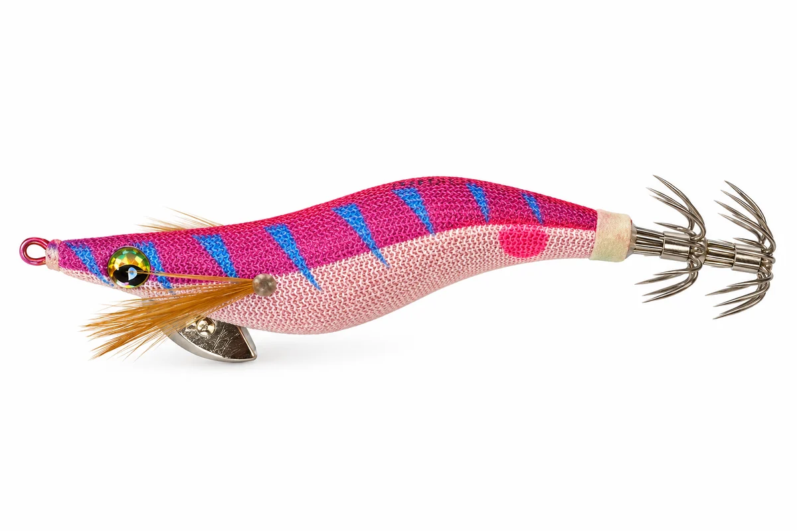
PREDADOR 03 · 2.5
Acabamento: RED TAPE
Quando usar a "uva brava"?
O vermelho é dos tons mais eficazes ao amanhecer e ao entardecer, quando a água ganha um tom avermelhado.
O roxo (uva) é das últimas cores a desaparecer com a profundidade, funcionando bem quando a luz é fraca ou a água está mais carregada.
A pinta junto às agulhas, semelhante a um olho, funciona como um ponto de atração visual. Ao explorar o comportamento natural do choco, que tende a atacar a presa pela zona da cabeça, ajuda a direcionar o ataque para a área das agulhas.
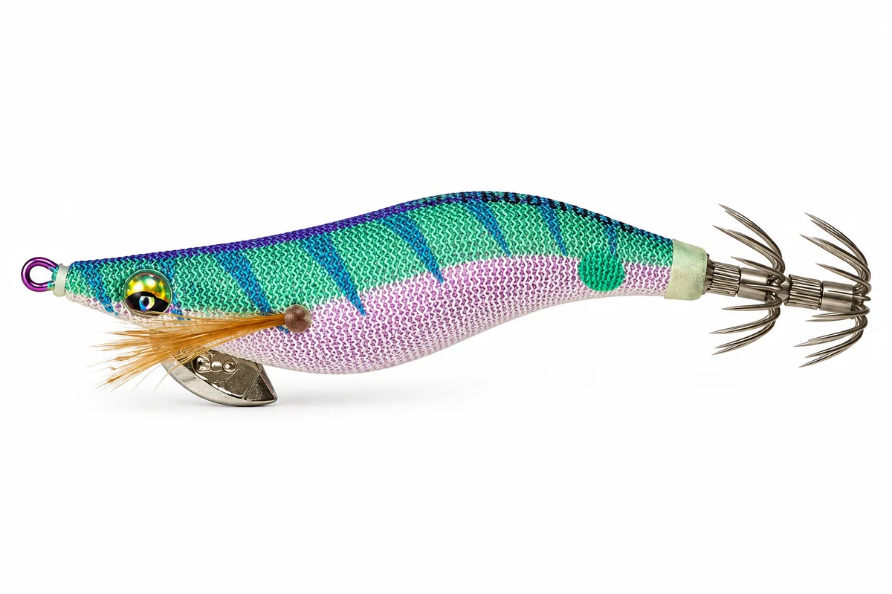
PREDADOR 04 · 2.5
Acabamento: PURPLE TAPE
Quando usar "o matador"?
O corpo roxo reflete a luz e é das últimas cores a desaparecer com a profundidade, mantendo o isco visível em pouca luz e água mais escura.
O dorso verde claro com riscas azuis garante contraste, excelente à noite e durante o crepúsculo.
A pinta junto às agulhas, semelhante a um olho, funciona como um ponto de atração visual. Ao explorar o comportamento natural do choco, que tende a atacar a presa pela zona da cabeça, ajuda a direcionar o ataque para a área das agulhas.
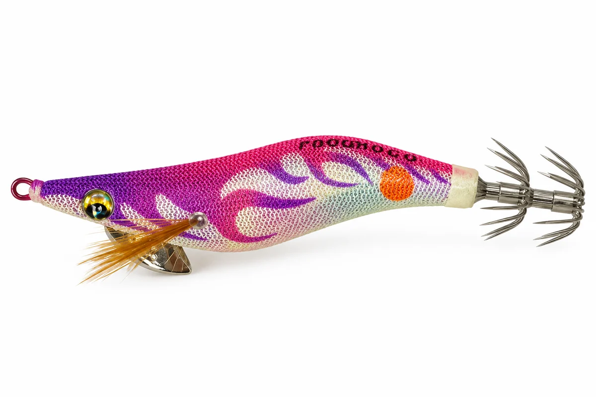
PREDADOR 05 · 2.5
Acabamento: RAINBOW TAPE
Quando usar a "lula em chamas"?
O corpo rainbow é muito versátil, funcionando durante todo o dia em vários tipos de água.
O degradê em tons de roxo e rosa é especialmente eficaz ao amanhecer e ao entardecer, quando a luz muda rapidamente.
A pinta junto às agulhas, semelhante a um olho, funciona como um ponto de atração visual. Ao explorar o comportamento natural do choco, que tende a atacar a presa pela zona da cabeça, ajuda a direcionar o ataque para a área das agulhas.
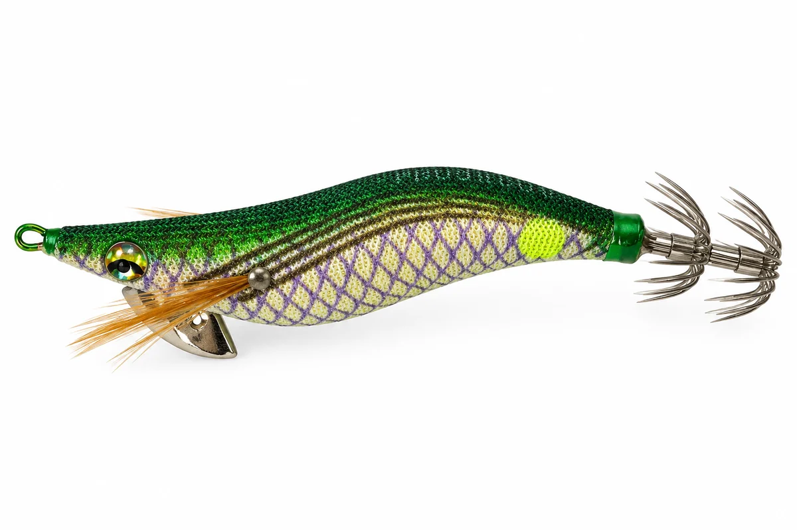
PREDADOR 06 · 2.5
Acabamento: GOLDEN TAPE
Quando usar a "cobra"?
O dourado sólido destaca-se por silhueta no sol alto e na luz intensa, funcionando muito bem em dias de sol e água clara.
O corpo dourado reflete a luz como um cardume de pequenos peixes, aumentando a atração à distância.
A pinta junto às agulhas, semelhante a um olho, funciona como um ponto de atração visual. Ao explorar o comportamento natural do choco, que tende a atacar a presa pela zona da cabeça, ajuda a direcionar o ataque para a área das agulhas.
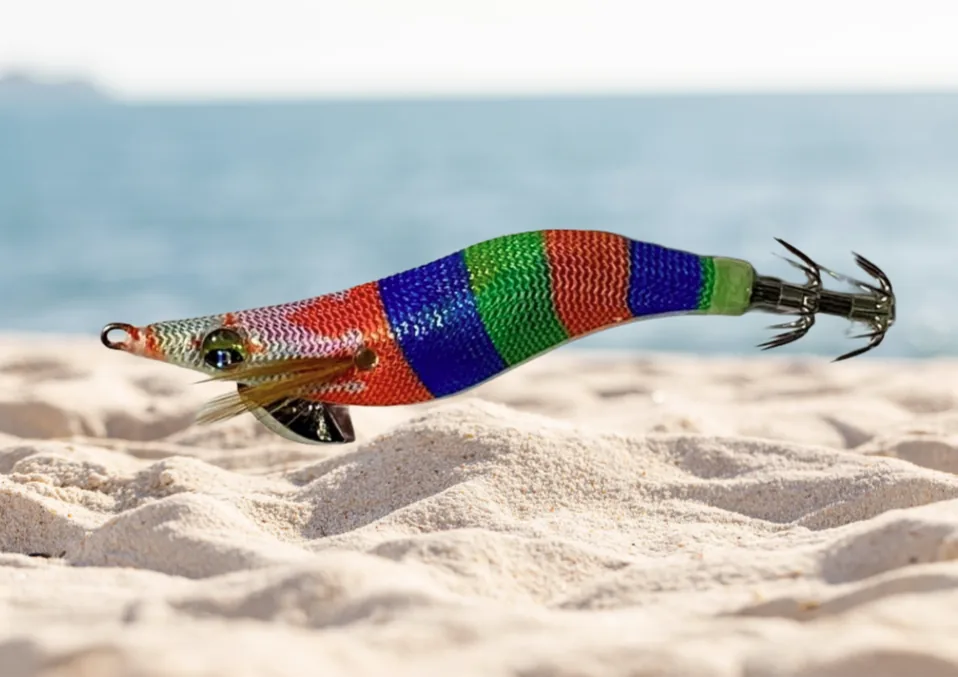
PROCHOCO SQUID JIGS
Quando usar um palhaço "rainbow"?
Durante o dia, sobretudo quando o sol já está mais alto.
É um padrão muito versátil, funcionando bem em vários tipos de água, desde mais clara até ligeiramente turva.
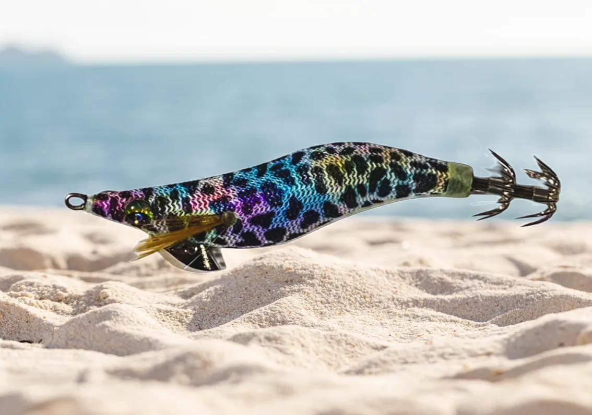
PROCHOCO SQUID JIGS
Quando usar um palhaço "rainbow"?
Durante o dia, sobretudo quando o sol já está mais alto.
É um padrão muito versátil, funcionando bem em vários tipos de água, desde mais clara até ligeiramente turva.
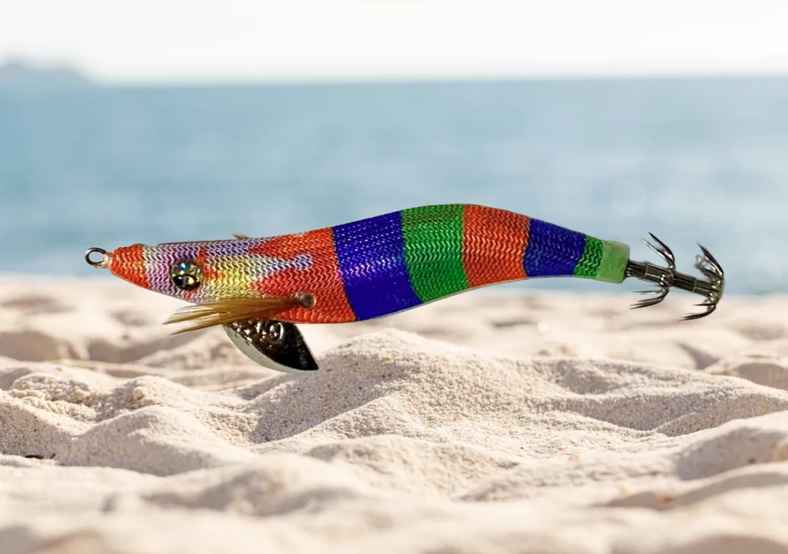
PROCHOCO SQUID JIGS
Quando usar um palhaço "rainbow"?
Durante o dia, sobretudo quando o sol já está mais alto.
É um padrão muito versátil, funcionando bem em vários tipos de água, desde mais clara até ligeiramente turva.
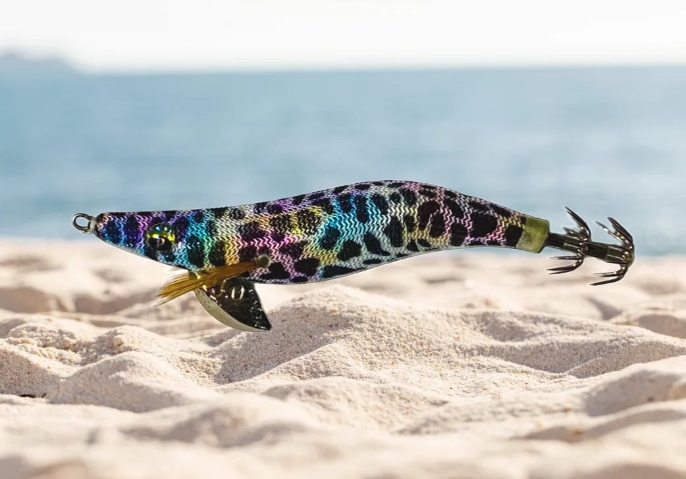
PROCHOCO SQUID JIGS
Quando usar um palhaço "rainbow"?
Durante o dia, sobretudo quando o sol já está mais alto.
É um padrão muito versátil, funcionando bem em vários tipos de água, desde mais clara até ligeiramente turva.
PERTO DE TI
Consulta os nossos produtos nas lojas e revendedores.
PARCERIAS & REVENDA
Contacte-nos para preços por grosso e quantidades mínimas de encomenda
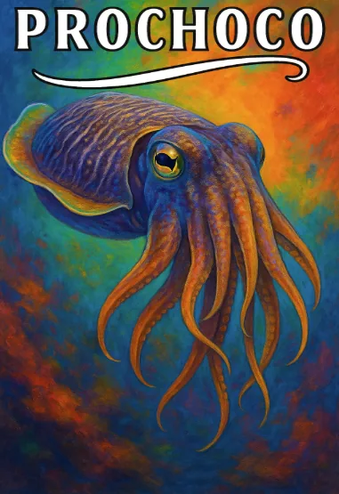
Uma marca portuguesa. Uma paixão pelo mar.
A MARCA
A PROCHOCO é uma marca Portuguesa que desenha e comercializa palhaços para pesca de cefalópodes de alta qualidade com grande atenção ao pormenor.
Materiais duráveis e acabamento exigente para uso profissional.
Equilíbrio perfeito, movimento natural e cores altamente atrativas.
A maioria das grandes histórias nasce de uma ideia simples… e a nossa não foi diferente. Tudo começou com uma paixão profunda pelo mar e pela arte da pesca. Acreditávamos, com uma convicção inabalável, que era possível transformar esse amor em algo maior: criar, equipamento de pesca de elevada qualidade, capaz de resistir ao uso duro, servir quem vive o mar e, acima de tudo, ser verdadeiramente eficaz. Munidos do nosso conhecimento, dos melhores materiais e de uma dedicação sem limites, lançámo-nos ao desafio. E foi assim que uma simples paixão se tornou numa missão e numa grande história que continua a crescer.
PARCERIAS & REVENDEDORES
Contacte-nos para preços por grosso e quantidades mínimas de encomenda.
prochocofishing@gmail.comPortugal, Setúbal
Procura um palhaço para a sua próxima saída de pesca? Conheça os nossos revendedores